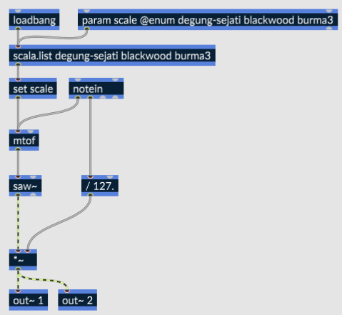
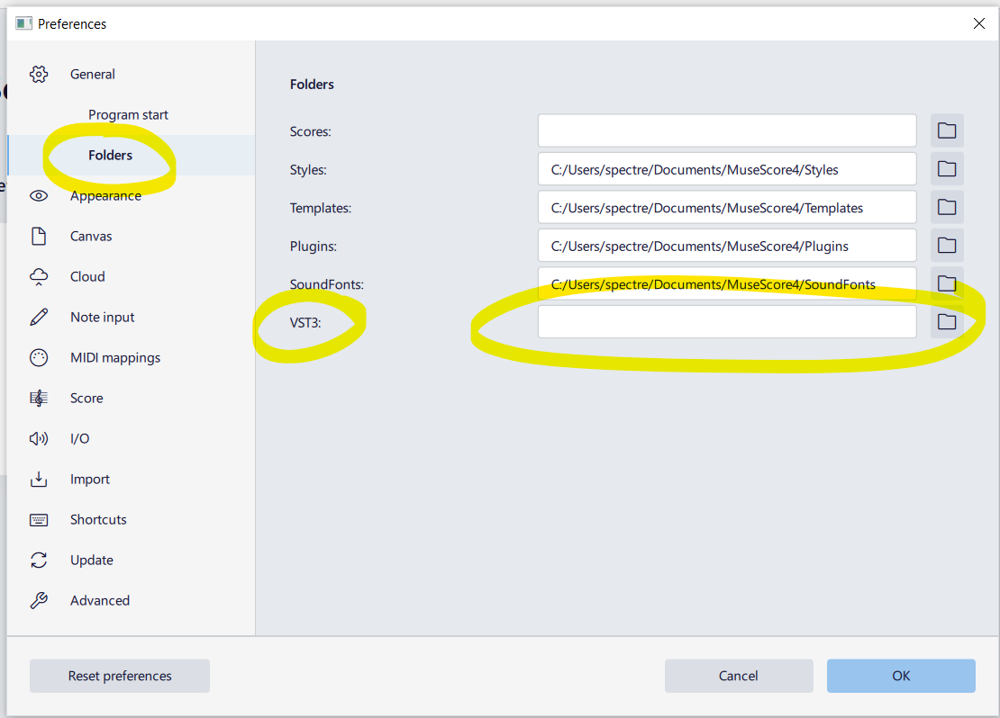
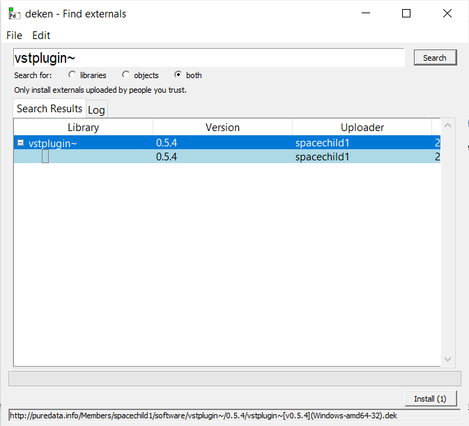
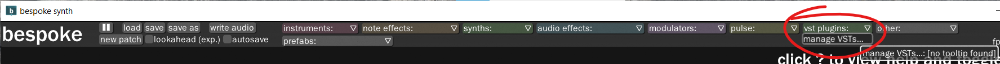
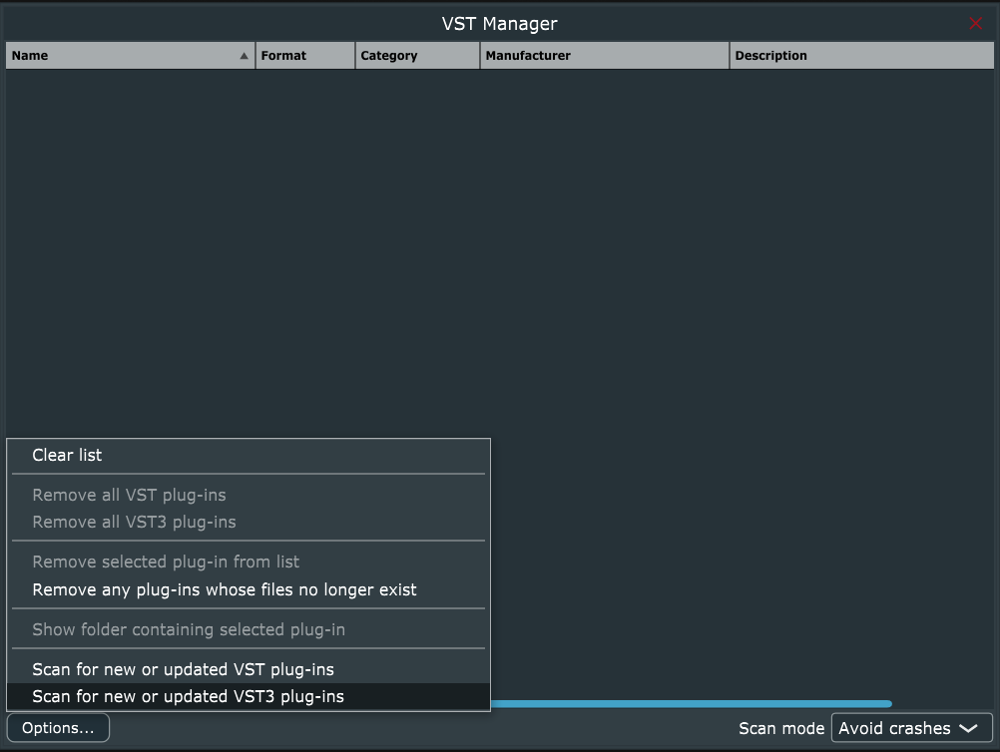
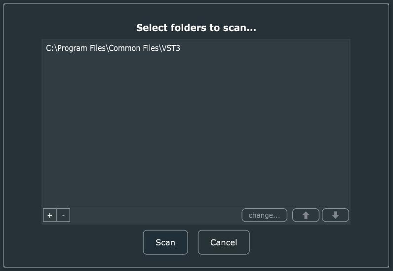
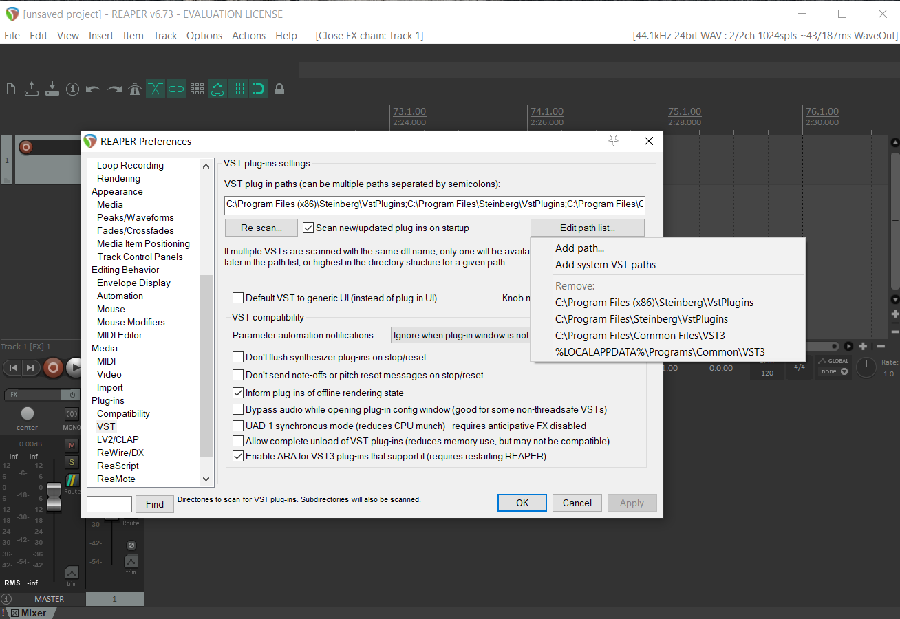

We’re going to look at using RNBO to export a plugin we can use in our other tools. RNBO patches can be exported as VST3 for Windows, OSX, and Linux, covering the vast majority of tools and operating systems ( and RNBO’s JavaScript export can help us target those pesky mobile devices ).
We will look at exporting both effects and instruments as VST3 plugins.
We’ll then look at running them on an assortment of hosts. You should experiment with opening them in the weirdest VST3 or AU compatible host you use.
Download rnbo-workshop-mess-23.maxpat
Resources
- A reference write-up and video about exporting VSTs with RNBO
- The RNBO explore page has example patches for a variety of contexts and use cases.
- About creating presets using Max snapshots.
Requirements
- A Mac or Windows machine.
- with Max and RNBO installed.
- and at least one VST3 host such as Reaper.
- An internet connection for compiling the plug-ins.
Creating a Simple Effect Plugin
Building the Plugin
- Open Max
- Using the package manager, install RNBO Guitar Pedals and RNBO Synth Building Blocks
- Create a new patcher
- create a [rnbo~] object
- Copy the internals from one of the guitar pedal effects into your RNBO patcher
- Drag a file from the audio section of the left side bar and connect it to your [rnbo~] object
- Add a [live.gain~] and an [ezdac] to the output of your [rnbo]
- In you Max patcher, add [attrui] objects for each parameter of your effect
- Save your Max patch (so snapshots work).
Creating Presets
- Play with the parameters in the [attrui] objects
- Select the [rnbo~] object and click the snapshot button on the right side bar.
- Make sure it says “rnbo~ snapshots” at the top of the Snapshots sidebar.
Exporting as a VST3
- From your RNBO patcher, open the Export Sidebar on the right side of the window.
- Choose Audio Plugin Export.
- Set “Format and Platform” to your requirements.
- Give your plugin a name, manufacturer, and manufacturer code as desired.
- Set plugin type to Effect
- Choose an output directory - it can be useful to create a directory specifically for your exported plugin.
- Enable “Include Presets”
- Click “Export to Selected Targets”.
Creating a Simple Microtonal Instrument
Building the Instrument
The patch below uses the scala feature of RNBO to implement microtonal tuning systems.

- Choose a few scales from the Scala scales directory and add them as arguments to the [scala.list] object, and to the @enum argument of [param scale] object.
- Set the @polyphony argument of the enclosing [rnbo~] object to hear the microtonal intervals.
Hosting Examples
MuseScore 4
MuseScore 4 looks for VST3 files in the following places:
# windows:
C:\Program Files\Common Files\VST3
# mac and linux:
~/.vst3/
/usr/lib/vst3/
/usr/local/lib/vst3/
You can set a custom folder location in preferences > general > folders

Pure Data
Use the deken package manager to install the vstplugin~ external. open deken by clicking help > find externals, then search for vstplugin~, select the latest version and click install.

Bespoke Synth
Click VST plugins > manage VSTs

Then “Scan for new or updated VST3 plug-ins”

Add your folder and click scan.

Reaper
- Click Options > Preferences > VST
- Clicking Edit path list will reveal the currently scanned folders.

- Add you VST folder to the path list
- click Re-scan > Rescan VST Paths for new/modified plug-ins